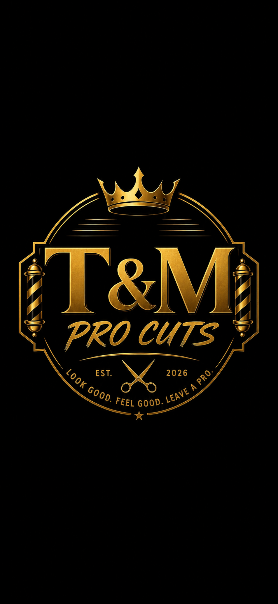

Languages
- Python
- JavaScript
- Swift
- C++
- Java
Software Engineer · Chicago, IL
Full-stack engineer with hands-on work across web platforms, iOS apps, and data pipelines. I care about performance, maintainable code, and products people actually use.

About
I'm a software engineer drawn to systems thinking, clean interfaces, and software that holds up after launch day.
I've built production websites for local businesses, shipped an iOS app used internationally, and led data analysis work with real-world datasets. I like owning problems end to end—from scoping and implementation to debugging and iteration.
Outside of code, I recharge with basketball and gaming. Both keep me competitive and patient when debugging gets hard.
Skills
Languages and tools I reach for in production work.
Experience
La Moda Furniture
Chicago, Illinois
Selected work
Case studies across data, web, and mobile—focused on what was built and why it matters.

End-to-end NLP and ML pipeline analyzing GDELT news headlines to study how global media frames Palestine coverage.

Premium barbershop marketing site built for walk-in customers—services, pricing, social proof, and hours in one clear flow.

Privacy-first iOS companion for prayer times, Quran browsing, Qibla, Zakat, and daily Hadith—architected for reliability at scale.
Contact
Open to internships, co-ops, and junior software roles. Share a role, project, or idea—I reply within a few days.